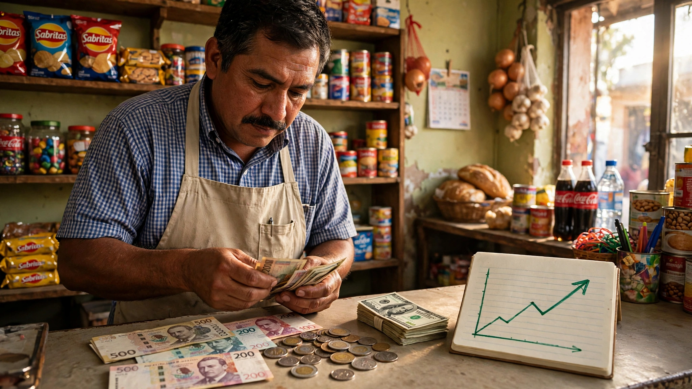
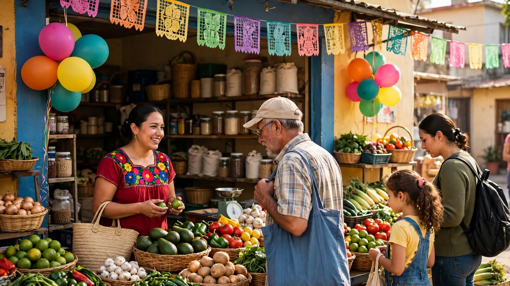
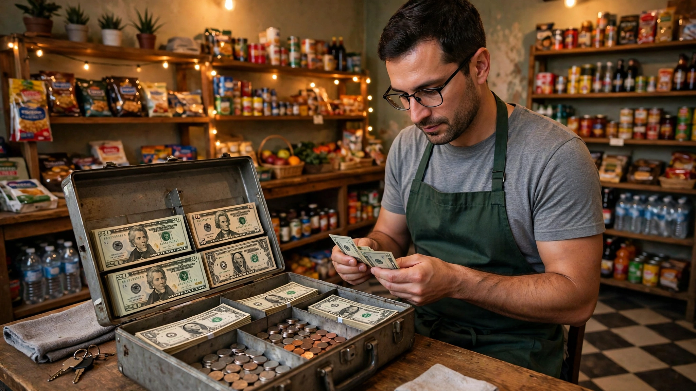
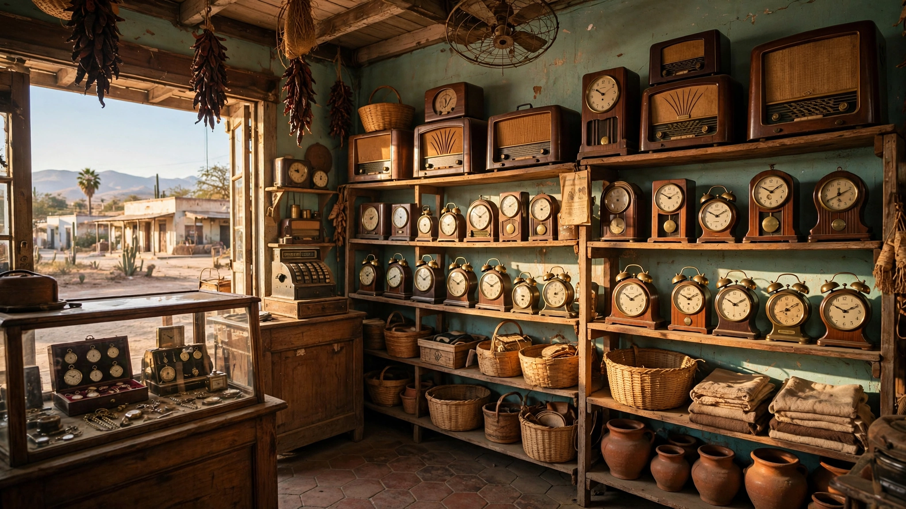
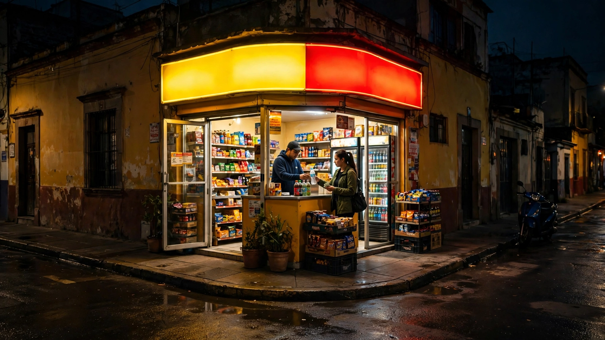
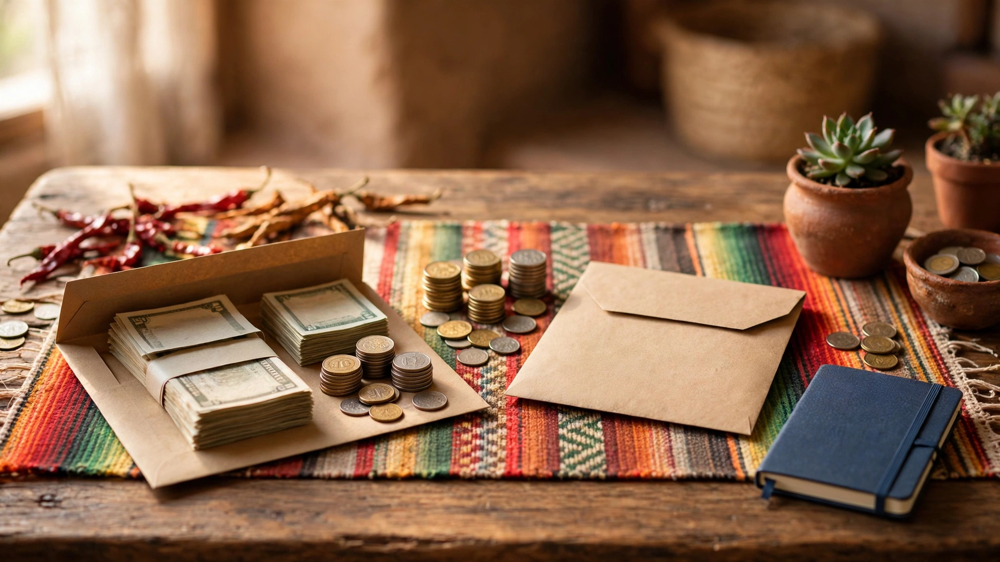
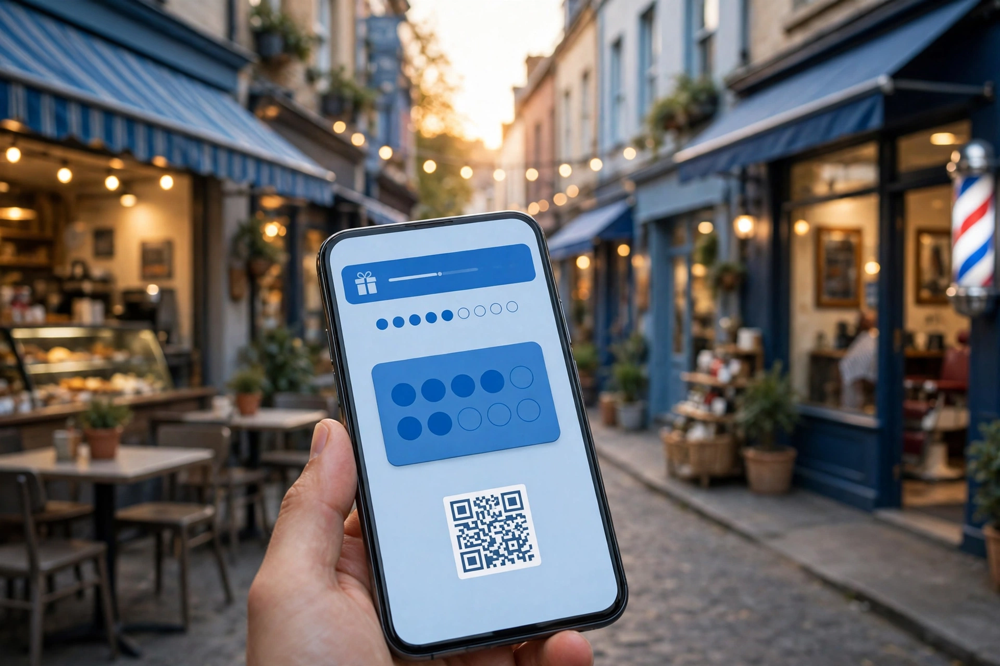
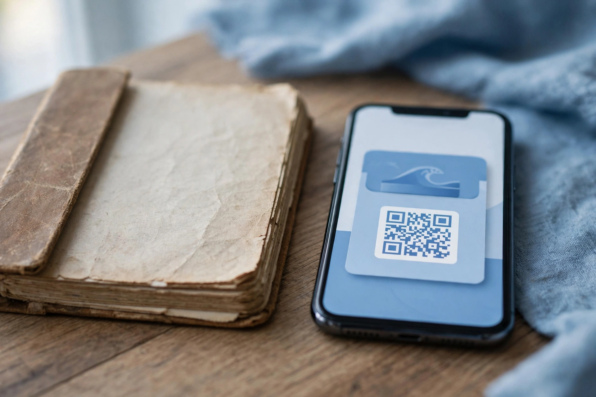

Actualidad8 de noviembre de 2026
El peso rompió su mala racha: qué significa para tu negocio que el dólar baje
Después de ocho semanas seguidas perdiendo terreno, el peso mexicano por fin respiró: el dólar cerró la semana en 18.6297 pesos (tipo de cambio FIX del Banco de México, viernes 6 de noviembre), frente a 18.7962 pesos una semana antes. Es una apreciación de alrededor de 0.9% en una semana, y el fin de la racha de caídas más larga en meses.
El impulso llegó por dos lados. El jueves 5 de noviembre, el Banco de México recortó su tasa de interés de 6.50% a 6.25%, con la inflación general en 3.62%. Y en Estados Unidos se crearon 165 mil empleos en octubre, mucho más que los 65 mil que esperaban los analistas, con el desempleo bajando de 4.2% a 4.1%. Esos datos hicieron que el dólar se moviera con fuerza en todo el mundo, y el peso salió ganando en la semana.
¿Y eso qué significa para el bolsillo? Un peso más fuerte abarata todo lo que se compra en dólares: mercancía importada, insumos y hasta algunos productos del súper que dependen del tipo de cambio. Además, la tasa más baja de Banxico es el primer paso para que los créditos —de negocio, de tarjeta o de nómina— empiecen a salir un poco más baratos, aunque eso no se nota de un día para otro.
Pero no hay que cantar victoria todavía. Los mercados ahora creen que la Reserva Federal de Estados Unidos podría subir sus tasas en diciembre: la probabilidad que le asignan pasó de 75% a 85% tras los datos de empleo. Si eso pasa, el dólar podría volver a subir y el peso, a perder lo ganado.
Para un negocio de barrio, la lección es práctica: si compras mercancía en dólares o importada, esta es buena semana para revisar tus precios y aprovechar el respiro. Y si piensas pedir un crédito, las tasas ya van bajando, pero conviene comparar antes de firmar. El lunes 9 de noviembre, cuando reabran los mercados, se verá si la recuperación del peso se sostiene o fue solo un descanso.
Actualidad7 de noviembre de 2026
Estados Unidos cambia de Congreso: qué significa para México y tu negocio
El 3 de noviembre de 2026, en las elecciones intermedias de Estados Unidos, el Partido Demócrata recuperó el control de las dos cámaras del Congreso: al menos 54 escaños en el Senado y más de 228 en la Cámara de Representantes, según los conteos reportados por Associated Press y Reuters. El nuevo Congreso empieza a funcionar el 3 de enero de 2027, y Donald Trump gobernará sus últimos dos años sin mayoría en el Legislativo.
Para México, el cambio no es automáticamente una buena noticia. Analistas consultados por El Financiero advierten que los legisladores demócratas podrían endurecer las posiciones en seguridad fronteriza y combate al crimen, y que la revisión del T-MEC seguirá su curso con presiones comerciales. El tratado entró en su mecanismo de revisiones anuales porque Washington no confirmó su prórroga, así que su futuro se negocia año con año.
Lo que sí cambia es el freno: el Congreso controla el presupuesto, así que ningún aumento de dinero para la frontera, las deportaciones o el muro podrá aprobarse sin los demócratas. En cambio, los aranceles no dependen del Congreso: el de 25% a los autos importados, vigente desde abril de 2025, lo impuso Trump con una ley de 1962 y el presidente conserva esa facultad.
Para un negocio de barrio, esto se traduce en precios y empleos. Si suben los aranceles o se traba el comercio, suben los costos de lo importado y se enfría el trabajo en las fábricas que exportan. La lección es la misma de siempre: no dependas de un solo proveedor ni de un solo producto, y mantén un colchón para los meses en que todo sube.
Fuentes: El Financiero (4 nov 2026), Oye Guanajuato con datos de AP y Reuters (4 nov 2026), Diario del Istmo (4 nov 2026).
Actualidad7 de noviembre de 2026
Las remesas llegaron con más dólares, pero compran menos
En septiembre de 2026, México recibió 5,362 millones de dólares en remesas, 1.6% más que en septiembre de 2025, según el Banco de México. Suena bien, pero hay un detalle: se hicieron menos envíos, unos 12.6 millones, 6.3% menos que un año antes. El dinero llegó porque cada envío fue más grande en promedio: 426 dólares, contra 393 del año pasado.
Entre enero y septiembre de 2026 entraron 47,164 millones de dólares, 2.1% más que en el mismo periodo de 2025. El problema está en lo que ese dinero compra. El peso se fortaleció frente al dólar y la inflación de septiembre fue de 3.45%, así que al descontar el aumento de precios, el poder de compra del envío promedio cayó alrededor de 2.2% respecto a septiembre de 2025.
Detrás del freno hay empleos: el Centro de Estudios Monetarios Latinoamericanos señaló que mexicanos en Estados Unidos perdieron trabajos en al menos tres sectores clave, y eso se refleja en menos envíos. BBVA Research ya había advertido que la fortaleza del peso podía reducir lo que realmente rinden las remesas en los hogares.
Para los negocios de barrio, la lección es directa: muchas familias viven de ese dinero y gastan menos cuando rinde menos. Si tus clientes reciben remesas, nota cuándo llega el dinero y cuándo se aprieta: ahí están tus mejores y tus peores semanas de venta.
Fuentes: Banxico vía Publimetro (3 nov 2026), YoAmoPuebla (4 nov 2026), La Cabeza de Ratón (6 nov 2026).
Actualidad7 de noviembre de 2026
El petróleo no da tregua: qué tiene que ver Ormuz con el precio de la gasolina
En la primera semana de noviembre de 2026, el barril de petróleo Brent se movió entre 96 y 107 dólares, subiendo y bajando según las noticias que llegaban del estrecho de Ormuz. Ese estrecho, entre Irán y Omán, es por donde pasa una parte enorme del petróleo y el gas que se comercian en el mundo, así que cualquier susto ahí se siente en el precio de inmediato.
El susto de esta semana tuvo nombre: el 2 de noviembre, Estados Unidos atacó un sistema de defensa aérea iraní en la isla de Qeshm, en la zona de Ormuz. Al día siguiente, el crudo subió más de 1.7%. Irán ofreció reabrir el tránsito por Ormuz en dos días si Washington levantaba el bloqueo, pero hasta ahora no hay acuerdo firmado y las conversaciones siguen con Qatar como mediador.
El propio Donald Trump reconoció que el precio de la gasolina influyó en el resultado de las elecciones intermedias del 3 de noviembre. La guerra, que empezó a finales de febrero, es una de las causas del precio alto de la gasolina, y la gasolina cara se siente en todo: en el reparto, en los precios del mercado y en el bolsillo del cliente.
Para tu negocio, la moraleja es práctica: cuando el petróleo sube, sube el costo de mover mercancía. Revisa tus precios de reparto, junta pedidos para no dar vueltas de más y no absorbas todo el aumento en silencio: un ajuste pequeño y explicado a tiempo vale más que perder dinero en cada entrega.
Fuentes: Reuters vía La Nación (3 nov 2026), Euribor (4 nov 2026), ABC Paraguay (5 nov 2026).

Actualidad7 de noviembre de 2026
El Buen Fin 2026 ya tiene fecha: 13 al 17 de noviembre
El Buen Fin 2026 se realizará del viernes 13 al martes 17 de noviembre, cinco días que incluyen el puente por la Revolución Mexicana. Será la edición número 16 de la campaña de descuentos más grande del país, creada en 2011 por el gobierno federal junto con las cámaras de comercio.
La Concanaco Servytur estima una derrama económica de 235 mil millones de pesos, 7.3% más que los 219 mil millones de 2025. De ese total, 79% se generaría en tiendas físicas y 21% en línea. Según la Asociación Mexicana de Venta Online, 77% de los consumidores potenciales ve probable comprar, y lo más buscado será moda (38%) y electrónicos (30%).
Para los negocios chicos hay dos datos que importan. El registro de comercios es gratuito y cierra el 12 de noviembre, y solo los registrados participan en el Sorteo El Buen Fin del SAT, que este año reparte una bolsa de 500 millones de pesos: 400 millones entre quienes pagan con tarjeta y 100 millones entre los comercios participantes. El sorteo será el 4 de diciembre.
No necesitas bajar tus precios a la mitad para participar. Arma una promoción clara en tus productos que más se mueven, avísales a tus clientes por WhatsApp con tiempo y cobra con tarjeta para que tus clientes entren al sorteo. El Buen Fin no es solo para las tiendas grandes: es la semana en la que más gente sale a comprar.
Fuentes: Concanaco Servytur vía Cruce Crítico (5 nov 2026), Bling con datos de AMVO, Clip (blog.clip.mx).
Economía7 de noviembre de 2026
El margen: la ganancia real que queda en tu bolsillo
Vender mucho no es lo mismo que ganar mucho. La diferencia está en el margen: lo que queda después de pagar lo que te costó lo que vendiste. Si compras algo en 50 pesos y lo vendes en 80, tu margen es de 30 pesos. Así de simple, y así de importante.
Hay dos márgenes que conviene distinguir. El margen bruto es lo que queda después de pagar el producto o el material. El margen neto es lo que queda después de pagar todo lo demás: renta, luz, sueldos y lo que se pierde. Un negocio puede tener buen margen bruto y aun así no ganar nada si sus gastos fijos se lo comen.
Por eso el precio no se pone mirando solo a la competencia. Primero suma cuánto te cuesta cada venta, luego decide cuánto quieres ganar por cada una y al final compara con lo que cobran los demás. Si tu margen es muy flaco, cualquier mes malo te deja en ceros.
Revisa tu margen por producto, no en general. Casi siempre hay un producto que te deja buena ganancia y otro que solo ocupa espacio y tiempo. El primero merece tu esfuerzo; el segundo, un nuevo precio o la salida.

Economía7 de noviembre de 2026
Flujo de caja: por qué un negocio puede vender mucho y quedarse sin dinero
El flujo de caja es el movimiento real del dinero: cuánto entra y cuánto sale, y en qué fecha. Un negocio puede vender mucho a crédito y quedarse sin dinero para pagar la renta, porque las ventas no son lo mismo que el dinero en la mano.
El error más común es gastar el dinero de las ventas antes de que lleguen los gastos. Llega la quincena, entra buen dinero, se compra mercancía, se paga algo pendiente y cuando toca la renta, ya no hay. No es que el negocio vaya mal: es que el dinero entró y salió en el orden equivocado.
La solución es mirar la semana, no el mes. Anota cada lunes cuánto tienes, cuánto esperas cobrar y cuánto tienes que pagar esa semana: renta, proveedores, luz. Si una semana sale en rojo, lo ves con tiempo y puedes mover un pago o apurar un cobro.
Y una regla de oro: separa el dinero del negocio del dinero de tu casa. Si mezclas las dos cosas, nunca sabrás si tu negocio gana o si tú estás viviendo de él. Págate un sueldo fijo y deja el resto trabajando en el negocio.
Economía7 de noviembre de 2026
El punto de equilibrio: cuántas ventas necesitas para no perder
El punto de equilibrio es el momento en que tu negocio deja de perder y empieza a ganar. Es una cuenta sencilla: suma tus costos fijos del mes (renta, luz, sueldos) y divídelos entre lo que ganas por cada venta. El resultado es cuántas ventas necesitas para salir tablas.
Un ejemplo: si tus costos fijos son 5,000 pesos al mes y ganas 50 pesos por cada venta, necesitas 100 ventas para no perder ni ganar. La venta 101 ya es ganancia. Saber ese número cambia la forma de ver el mes: ya no es "a ver cómo nos va", es "me faltan 30 ventas".
Este número también te dice si tu precio está bien puesto. Si necesitas vender una cantidad imposible para cubrir tus gastos, el problema no es vender más: es que tu precio es bajo o tus costos son altos. Ahí es donde hay que ajustar.
Calcúlalo una vez al mes, con tus números reales. Es el número más útil de tu negocio, porque te dice exactamente a qué distancia estás de ganar dinero.
Economía7 de noviembre de 2026
Costo de oportunidad: lo que pierdes cuando eliges mal
El costo de oportunidad es lo que dejas de ganar cuando eliges una cosa en lugar de otra. Cada peso y cada hora solo se pueden gastar una vez, así que cada decisión tiene un costo escondido: lo que pudiste haber hecho con ese mismo dinero o ese mismo tiempo.
Un ejemplo de todos los días: compras mercancía que se queda meses en el estante. Ese dinero parado pudo haber comprado lo que sí se vende, o pudo haber pagado una deuda. El costo no es solo lo que pagaste: es la ganancia que dejaste de tener.
Lo mismo pasa con el tiempo. Una tarde dedicada a un cliente que regatea y nunca compra es una tarde que no dedicaste a los clientes que sí vuelven. El tiempo es el recurso más escaso de un negocio chico, y no se recupera.
Antes de gastar, pregúntate: ¿qué gano si lo hago y qué pierdo si no lo hago? No se trata de no gastar, sino de gastar donde el dinero y el tiempo rinden más.
Economía7 de noviembre de 2026
Precio y valor no son lo mismo: por qué el cliente paga más por lo mismo
El precio es lo que cobra el negocio. El valor es lo que siente el cliente que recibe. Dos cafés pueden costar 20 y 60 pesos y ser el mismo grano: lo que cambia es el lugar, el trato, la confianza y la experiencia. El cliente no paga por el café: paga por todo lo demás.
Por eso competir solo por ser el más barato es una trampa. Siempre habrá alguien más barato que tú, y el cliente que solo busca precio se va con el primero que baje un peso. En cambio, el cliente que valora lo que le das —el trato, la constancia, la confianza— se queda y hasta recomienda.
Subir el valor no siempre cuesta dinero. Saludar por el nombre, recordar lo que le gusta, tener el local limpio, cumplir lo prometido: eso es valor, y eso es lo que hace que un cliente pague un poco más sin pensarlo dos veces.
La próxima vez que pienses en bajar tu precio, piensa mejor en subir tu valor. Un negocio que se vende por valor gana más y sufre menos que uno que se vende por precio.
Historias7 de noviembre de 2026
De una sala en Morelia a los cines de todo el mundo: así nació Cinépolis
En 1971, en Morelia, Michoacán, Enrique Ramírez Miguel y su hijo Enrique Ramírez Villalón abrieron el Cine Morelia, en la calle Santiago Tapia del centro histórico. Con esa sola sala nació la empresa que se llamó Organización Ramírez. No era una cadena: era un cine de barrio con una familia detrás.
La familia fue creciendo sala por sala: en 1972 nacieron los Cinemas Gemelos y en 1973 empezó la expansión con el nombre de Multicinemas. Durante más de veinte años, el negocio fue sumar salas y aprender qué quería el público: comodidad, varias películas a la vez y horarios para todos.
El gran salto llegó en 1994, cuando nació la marca Cinépolis y con ella las primeras salas tipo multiplex, varias pantallas en un mismo lugar. Ese cambio transformó el cine en México y llevó a la empresa a otros países de América, Europa, Medio Oriente y Asia.
Hoy Cinépolis es una de las cadenas que más boletos vende en el mundo, con 889 complejos según datos de octubre de 2026, y sigue dirigida por la familia: Alejandro Ramírez Magaña, nieto del fundador, es su director general. La lección para un negocio chico es clara: no se empieza grande, se empieza bien, y se crece mejorando la experiencia del cliente, sala por sala.
Fuentes: Wikipedia (Cinépolis), Ámbito (2025), Canal 44 (nov 2026).

Historias7 de noviembre de 2026
De una tiendita llamada El Regalo a Coppel: el crédito a la palabra
En 1941, Luis Coppel Rivas y su hijo Enrique Coppel Tamayo se mudaron de Mazatlán a Culiacán, Sinaloa, y abrieron una tiendita llamada El Regalo. Vendían regalos, y con el tiempo radios y relojes. Era un negocio familiar chico, como tantos.
Después de la Segunda Guerra Mundial, sus clientes no tenían dinero para comprar de contado. Padre e hijo tomaron entonces una decisión que cambió todo: invirtieron sus ahorros en vender muebles a crédito, en cómodos abonos semanales, confiando en la palabra del cliente. La tiendita se convirtió en una mueblería con sistema de crédito, y los clientes empezaron a llamarla por el apellido de la familia: Coppel.
El crédito a la palabra funcionó porque se basaba en conocer al cliente y en la confianza mutua. En 1965 la empresa se constituyó como Almacenes Coppel y en 1992 adoptó oficialmente el nombre Coppel. Con los años sumó ropa, calzado, banco y Afore, y hoy tiene miles de puntos de venta en México y Argentina.
La lección es de oro para un negocio de barrio: cuando tus clientes no pueden pagar de contado, no los pierdas: dales una forma de pagar. Y lo más valioso no fue el crédito en sí, sino la confianza. Coppel nació de confiar en la palabra de la gente.
Fuentes: Coppel.com (Acerca de nosotros), Wikipedia (Coppel), Infobae (2023).

Historias7 de noviembre de 2026
Oxxo nació para vender cerveza: de una tienda en Monterrey a la esquina de todos
El 1 de mayo de 1978, en Guadalupe, Nuevo León, abrió la primera tienda Oxxo. Era un proyecto de la Cervecería Cuauhtémoc Moctezuma para tener su propio canal de venta: al principio, las tiendas solo vendían cerveza, botanas y cigarros. El nombre nació del símbolo de porcentaje, que se parecía a un carrito de supermercado.
La idea era sencilla: estar cerca, abrir todos los días y vender lo que la gente necesita a cualquier hora. Al año siguiente, en 1979, ya había tiendas en Chihuahua, Hermosillo y Mexicali. Con el tiempo, Oxxo dejó de vender solo cerveza y fue sumando café, comida, pagos de servicios, recargas y envíos de dinero.
Hoy Oxxo es una de las redes de tiendas de conveniencia más grandes de América Latina: al 30 de junio de 2026 tenía 24,708 tiendas solo en México, como parte de FEMSA. La primera tienda, la de la calle Lindavista en Guadalupe, sigue dando servicio.
La lección para un negocio de barrio es la proximidad: no hay que ser el más grande, hay que ser el más cercano. Abrir cuando los demás cierran, estar en la esquina de todos los días y sumar servicios que la gente ya busca es lo que convierte una tienda en un hábito.
Fuentes: Wikipedia (OXXO), Expansión (abr 2026), El CEO (ago 2025).
Historias7 de noviembre de 2026
La Costeña: los chiles de la trastienda que conquistaron México
En 1923, Vicente López Resines, un español que había trabajado en empacadoras de salsa de tomate en Estados Unidos, compró una tienda de abarrotes llamada La Costeña en Tlatelolco, Ciudad de México. Ahí vendía tortas, y para acompañarlas preparaba él mismo chiles serranos y jalapeños en vinagre.
Los chiles gustaron tanto que los clientes empezaron a pedirlos por separado. Vicente empezó a venderlos a granel y después en latas de tres kilos, envasados a mano. Sin planearlo, el acompañamiento se había convertido en el negocio. En 1937 abrió su primera fábrica en la colonia Estrella, también en la Ciudad de México.
Con los años llegaron los frijoles, las verduras, las salsas y las exportaciones: en 1975 La Costeña empezó a vender en Estados Unidos. En 2025, la empresa registró ingresos por 18,970 millones de pesos, con unos 4,500 empleados.
La lección es perfecta para un negocio chico: el producto que hoy regalas o das como acompañamiento puede ser tu mejor negocio. Vicente no inventó los chiles: escuchó a sus clientes, notó qué pedían una y otra vez y lo convirtió en su producto principal. Escuchar vale más que adivinar.
Fuentes: Expansión (17 sep 2026), El Financiero (16 sep 2026), Lado.mx (28 jul 2026).
Negocios7 de noviembre de 2026
Cómo ponerle precio a tu producto sin regalar tu trabajo
Poner precio es la decisión que más dinero te hace ganar o perder, y muchos negocios la hacen al tanteo. Hay una forma sencilla de hacerlo bien, en tres pasos: suma tus costos, decide tu ganancia y revisa a la competencia.
Primero, suma todo lo que te cuesta cada venta: el producto o el material, lo que gastas en hacerlo y una parte de tus gastos fijos, como la renta y la luz. Si no cuentas todo, tu precio miente y tu ganancia se evapora sin que sepas dónde.
Segundo, decide cuánto quieres ganar por cada venta. No es avaricia: es lo que te permite seguir abierto, reponer mercancía y pagarte un sueldo. Un precio sin ganancia es un negocio que se acaba solo.
Tercero, mira lo que cobran los demás, pero no copies sin pensar. Si tu precio queda arriba, explica por qué vale más: mejor trato, mejor calidad, más confianza. Y nunca compitas solo por ser el más barato: ese camino solo tiene un ganador, y nunca es el negocio chico.
Negocios7 de noviembre de 2026
El cliente que no vuelve: cómo recuperarlo antes de perderlo
Todo negocio tiene clientes que dejan de venir sin avisar. No se fueron enojados: simplemente se les olvidó, probaron otro lugar o se les acabó el motivo para volver. La buena noticia es que recuperar a un cliente que ya te conoce cuesta menos que conseguir uno nuevo.
El primer paso es notarlo a tiempo. Si un cliente venía cada semana y lleva un mes sin aparecer, ahí hay una señal. No esperes tres meses: entre más pasa, más frío está el recuerdo. Un mensaje sencillo por WhatsApp puede bastar: salúdalo por su nombre y dale un motivo concreto para volver.
El motivo tiene que ser real: una promoción con fecha, un producto nuevo que le puede gustar o un detalle por su regreso. Evita el mensaje genérico de "te extrañamos": nadie vuelve por un mensaje genérico. Vuelve por algo que le conviene.
Y si no responde, no insistas cada semana. Un recordatorio amable al mes es suficiente. El cliente que vuelve después de un mensaje se convierte en uno de los más leales: sabe que lo notaste.
Negocios7 de noviembre de 2026
Vende más sin gastar en publicidad: el boca en boca sí se puede trabajar
La mejor publicidad de un negocio de barrio no se paga: es lo que un cliente contento le dice a otro. El problema es que la mayoría de los negocios esperan a que eso pase solo, y el boca en boca también se puede trabajar.
El mejor momento para pedir una recomendación es cuando el cliente está contento: justo después de un buen servicio, cuando te da las gracias o cuando te dice que le gustó. Ahí, una frase sencilla funciona: "Si te gustó, pásale mi número a quien lo necesite". No es pena: es dejarle la puerta abierta.
Ayuda a que te recomienden: ten tu número de WhatsApp a la vista, en la tarjeta o en un letrero, y responde rápido cuando alguien escribe. Un cliente que recomienda y su amigo no recibe respuesta es una recomendación perdida.
Y premia al que trae gente. No tiene que ser dinero: un detalle, un descuento o un producto de regalo en su décima visita. Cuando recomendarte también le conviene a tu cliente, el boca en boca se vuelve tu mejor vendedor.

Negocios7 de noviembre de 2026
Separa el dinero de tu casa y el de tu negocio (o siempre estarás en ceros)
La causa más común de que un negocio de barrio no crezca no es la falta de ventas: es que el dinero del negocio y el de la casa viven revueltos. Si de la misma caja sale la mercancía, la renta y la despensa, nunca sabrás si tu negocio gana o si tú estás viviendo de él.
La solución no necesita un contador: dos sobres, dos cuentas o dos apartados en la misma cuenta. Todo lo que entra por ventas va al sobre del negocio. De ahí salen los gastos del negocio y nada más. El dinero de la casa sale de un solo lugar: tu sueldo.
Págate un sueldo fijo, aunque sea modesto, y respétalo como si fuera el de un empleado. Cuando te pagas siempre lo mismo, sabes cuánto te cuesta tu negocio y cuánto te deja. Y cuando el negocio gana más, ese extra se queda para crecer, no se gasta sin plan.
El negocio que separa su dinero tiene dos ventajas: sabe cuánto gana de verdad y siempre tiene para reponer mercancía. El que no lo hace, trabaja mucho y siempre anda en ceros.
Negocios7 de noviembre de 2026
Tu mejor vendedor es el cliente contento: cómo pedir recomendaciones sin pena
Muchos negocios nunca piden recomendaciones porque les da pena. Pero pedir una recomendación no es rogar: es decirle a un cliente contento que su opinión vale y que puede ayudar a alguien más a encontrar un buen lugar.
La clave está en cuándo pedirla. No lo hagas cuando el cliente tiene prisa ni cuando algo salió mal. Pídela cuando está contento: cuando te dice "qué rico quedó", cuando vuelve por segunda vez en la semana o cuando te trae a un amigo. Ahí, un simple "¿me ayudarías recomendándonos?" abre la puerta.
Dale algo concreto para compartir: tu tarjeta, tu WhatsApp o el nombre de tu negocio escrito en un papelito. La gente recomienda más cuando le pones fácil el cómo. Y si te dejan una buena opinión en redes, contéstala con un gracias: eso anima a otros a opinar también.
¿Y si llega una mala opinión? No la borres ni te pelees: contesta con calma, ofrece resolverlo y aprende de ahí. Un negocio que responde bien a una queja genera más confianza que uno que nunca tiene ninguna.
Historias7 de noviembre de 2026
De cuatro panes a la panificadora más grande del mundo: así nació Bimbo
En 1945, Lorenzo Servitje tenía 26 años, era contador egresado de la UNAM y llevaba casi una década al frente de la pastelería familiar El Molino, en la Ciudad de México, desde que la muerte de su padre lo puso al mando a los 18. Su tío Jaime Sendra, jefe de producción, le hizo una pregunta sencilla: ¿por qué no ponemos una fábrica de pan? El pan de caja empezaba a ganar popularidad en México, y Lorenzo vio ahí una oportunidad que nadie estaba aprovechando a lo grande.
El 2 de diciembre de 1945 nació Panificación Bimbo, con 34 empleados, un local prestado y solo cuatro productos: pan blanco chico, pan blanco grande, pan negro y pan tostado. No tenían un gran capital —arrancaron con un millón de pesos, en buena parte financiado—, pero sí tenían algo que los demás no: una idea clara de cómo querían vender. Mientras su competencia envolvía el pan en papel parafinado que no dejaba ver el producto, Bimbo lo empacó en papel celofán transparente, para que el cliente viera lo que compraba.
Lorenzo entendió desde el primer día que el pan industrial necesitaba marca, no solo sabor. El nombre salió de una lluvia de ideas entre los socios: iba a llamarse Súper Pan, pero no se pudo registrar, y al final quedó Bimbo, una mezcla de "Bambi" y "Bingo". La ilustradora Anita Mata creó al Osito Bimbo, que se convirtió en el símbolo de confianza que generaciones de mexicanos reconocen hasta hoy. Y desde el inicio pusieron especial énfasis en la distribución: enviaban el pan por ferrocarril y en camiones al interior del país, para que llegara fresco y a tiempo.
Hoy, casi 80 años después, Grupo Bimbo es la panificadora más grande del mundo, con presencia en más de 30 países. Empezó como un negocio familiar chico, con cuatro productos y un local que ni siquiera era propio. La lección para un negocio de barrio es directa: no hace falta empezar grande, hace falta empezar con algo que el cliente pueda reconocer y en lo que pueda confiar. Un buen producto, una presentación que se distinga y cumplir siempre con la entrega valen más que un gran presupuesto inicial.
Si tienes un negocio chico, piensa como Servitje: ¿qué hace diferente a tu producto cuando el cliente lo ve por primera vez? ¿Tu nombre se queda en la memoria? ¿Llegas siempre a tiempo? Bimbo no ganó por tener más dinero que los demás, ganó por cuidar esos tres detalles todos los días, durante décadas. Eso es algo que cualquier negocio, por chico que sea, puede copiar desde mañana mismo.
Actualidad7 de noviembre de 2026
El peso respira: rompe ocho semanas de pérdidas y cierra en 18.62 por dólar
El peso mexicano cerró la semana en 18.62 por dólar y puso fin a una racha de ocho semanas consecutivas de pérdidas. En la semana ganó 0.8 por ciento, unos 15 centavos, después de haber tocado 18.96 pesos por dólar el jueves. Es un respiro importante para una moneda que venía perdiendo 11.25 por ciento en ese periodo.
Detrás del rebote hay dos noticias. La primera llegó de Estados Unidos: el mercado laboral creó más empleos de lo esperado, lo que calmó a los inversionistas. La segunda fue sorpresa en casa: el Banco de México recortó su tasa de interés de 6.50 a 6.25 por ciento, una decisión que pocos esperaban y que se aprobó por 3 votos contra 2.
Para los negocios chicos, el tipo de cambio no es un tema lejano: todo lo que se compra en dólares —mercancía, insumos, refacciones— se encarece o se abarata con cada movimiento del peso. Ocho semanas de depreciación significaron costos más altos para quien importa o compra productos que se cotizan en dólares. Esta semana, por fin, la presión aflojó un poco.
El recorte de Banxico tiene dos caras. Por un lado, abarata el crédito: si la tasa baja, los préstamos para un negocio —para surtir inventario o comprar equipo— pueden salir más baratos en los próximos meses. Por otro, llega con la inflación al alza, en 3.62 por ciento, y con analistas que cuestionan si era el momento de bajar la tasa.
La presidenta Claudia Sheinbaum respaldó la decisión del banco central, mientras la Bolsa Mexicana también tuvo una buena semana: su índice principal subió 2.31 por ciento y cerró en 71,393 puntos. La lección para el negocio de barrio es sencilla: el peso se movió a favor esta semana, pero el panorama sigue siendo incierto. Si tienes compras en dólares pendientes, este es buen momento para revisar precios con tus proveedores antes de que el tipo de cambio vuelva a moverse.
Actualidad7 de noviembre de 2026
Paraguay en crisis: un banco quebrado, un presidente que renuncia y millones de ahorros congelados
Paraguay vive una de las crisis más graves de su historia reciente. Todo empezó con Ueno Bank, el sexto banco más grande del país, que quedó bajo intervención del Banco Central después de que se detectaran graves irregularidades en sus créditos y su gobierno interno. Su índice de solvencia había caído a 5,56%, muy por debajo del mínimo regulatorio del 12%.
El golpe fue enorme porque Ueno Bank tenía casi tres millones de clientes, la mitad de la población de un país de seis millones, que quedaron sin acceso a sus depósitos. Además, la entidad manejaba entre 800 y 850 millones de dólares de fondos estatales.
La crisis se volvió política cuando el presidente Santiago Peña presentó su renuncia, antes de enfrentar un juicio político en el Congreso, en medio de los cuestionamientos por los recursos públicos que recibió el banco durante su gobierno.
Los mercados ya lo sienten: en apenas una semana el dólar subió 12,3% frente al guaraní, de 5.661 a 6.358 guaraníes, y el riesgo país medido por JP Morgan llegó a 144 puntos básicos.
Aun así, los analistas dicen que los fundamentos de Paraguay siguen sólidos, con un crecimiento de 6,6% en 2025 y una inflación interanual de 1,7% en octubre, por debajo de la meta del Banco Central. El problema, coinciden, es la confianza.

Negocios7 de noviembre de 2026
Los negocios de barrio apuestan por la fidelización digital
Cada vez más negocios de barrio están dejando atrás las tarjetas de cartón y los sellos. Ahora registran a sus clientes con su celular y les entregan una tarjeta digital con código QR.
El cambio es sencillo: el cliente se registra una vez y en cada visita solo se escanea su código. No hay que imprimir nada ni guardar libretas.
Los dueños dicen que lo que más les gusta es ver quiénes vuelven y quiénes no han venido últimamente, sin tener que adivinar.
La fidelización digital también ayuda a los negocios chicos a competir con las cadenas grandes, que ya usan este tipo de programas desde hace años.
Con herramientas como Frecliente, un negocio de barrio puede tener su propio programa de lealtad sin pagar una app costosa ni necesitar internet.
Economía7 de noviembre de 2026
El cliente que vuelve vale más que el cliente nuevo
Conseguir un cliente nuevo cuesta más que mantener a uno que ya te conoce. Por eso los negocios que más crecen son los que logran que sus clientes vuelvan.
Un cliente que vuelve ya sabe lo que vendes, confía en tu negocio y gasta más en cada visita que alguien que entra por primera vez.
Además, un cliente contento recomienda tu negocio a sus amigos y familiares. Esa recomendación vale más que cualquier anuncio pagado.
Premiar la constancia, por ejemplo con un producto gratis cada 10 visitas, es una forma barata de lograr que el cliente regrese una y otra vez.
Al final, la cuenta es simple: cuidar a tus clientes de siempre es la inversión más rentable que puede hacer un negocio chico.

Historias7 de noviembre de 2026
De la libreta al celular: así cambió el control de clientes
Durante años, muchos negocios llevaron el control de sus clientes en una libreta: nombres escritos a mano, visitas marcadas con palomitas y tarjetas de cartón con sellos.
El problema era que la libreta se perdía, se mojaba o simplemente nadie la actualizaba. Y cuando un cliente perdía su tarjeta, se perdía también su historial.
Con el celular, todo eso cambió: el registro queda guardado, la tarjeta vive en el teléfono del cliente y cada visita se suma con un escaneo.
Los dueños ahora pueden ver en su Panel cuántas visitas tuvieron, quiénes son sus mejores clientes y qué días les va mejor, sin hacer cuentas a mano.
La libreta no desapareció del todo: muchos negocios la guardan como recuerdo de sus inicios. Pero el control de clientes, ese ya vive en el celular.